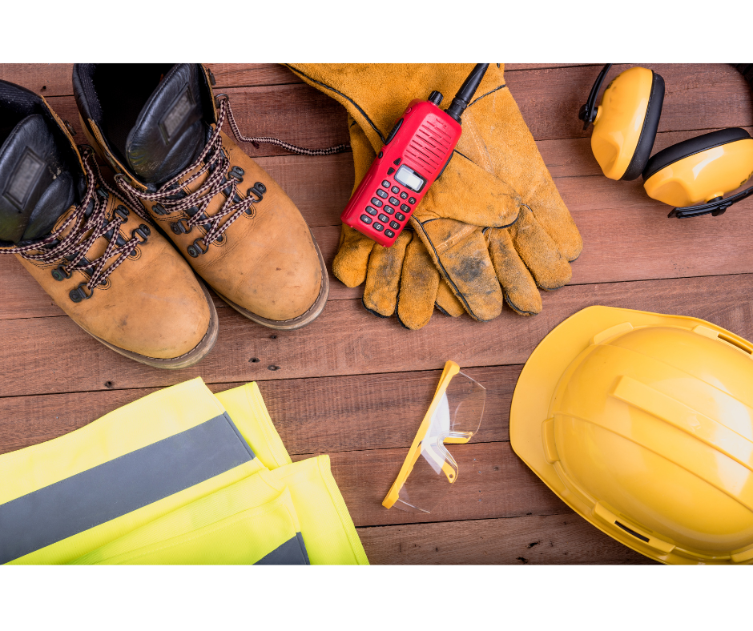

NVQ Level 6 Diploma in Occupational Health and Safety
NVQ Level 6 health and safety - if you’re looking to advance your career in the health and safety sector, achieving the NVQ Level 6 Health and Safety qualification can be a crucial step.
The Level 6 NVQ in Occupational Health and Safety Practice is an industry recognised qualification which demonstrates your competence in managing health and safety within your organisation.
What's even more appealing is that this qualification is completed entirely online with no exams, making it an ideal choice for busy professionals.
On this page, we'll explore the key benefits of completing your NVQ Level 6 in Health and Safety with Positive Safety Solutions Consultancy & Training, and why the absence of traditional exams offers a more practical and stress-free way to gain this prestigious qualification.
What is the Level 6 health and safety NVQ?
The NVQ Level 6 Diploma in Occupational Health and Safety Practice is a qualification designed for senior health and safety professionals who are responsible for overseeing safety protocols within their organisations. It is equivalent to a bachelor’s degree and can pave the way to Chartered status with the Institution of Occupational Safety and Health (CMIOSH). The NVQ Level 6 in Health and Safety focuses on practical experience and competency in health and safety management. Rather than studying purely theoretical material, the NVQ Level 6 allows you to demonstrate your knowledge through real-world tasks, showcasing your ability to apply safety practices in your current role.
Why Complete the NVQ Level 6 Health and Safety Online?
1. Flexibility and Convenience One of the most significant benefits of completing your NVQ Level 6 Health and Safety online is the flexibility it offers. You can work through the qualification at your own pace, fitting your studies around your work and personal commitments. Unlike traditional classroom-based qualifications, online NVQs allow you to study from anywhere, at any time. Whether you're a busy professional juggling multiple responsibilities or someone looking to advance in your career without taking time off work, the online format offers unmatched convenience.
2. No Exams – Competence-Based Assessment A key advantage of the NVQ Level 6 Health and Safety qualification is that there are no exams. Traditional qualifications often involve rigorous tests and exams, which can be stressful and time-consuming. However, the NVQ model is based on assessing your competence in real-world health and safety situations. Throughout the course, you'll compile a portfolio of evidence, demonstrating your practical experience and how you apply health and safety principles in your current role. This evidence-based assessment method ensures that you are judged on your actual ability to manage health and safety, not just on your ability to pass an exam. For many professionals, this makes the qualification process far more relevant and rewarding. At Positive Safety Solutions, we utilise our workbook system to assist you by providing clarity on what is required. Each unit has its own workbook, you complete the workbook for the unit, provide the required evidence, and your assessor will then assess it. If there are any areas that need further work, your assessor will let you know, and you simply address the areas they have highlighted.
3. Progress at Your Own Pace Another benefit of the online NVQ Level 6 is that there are no deadlines for assignments. You have 24 months to complete the qualification (10 units in total) and you can progress at a pace that suits you, allowing you to focus on applying the skills and knowledge in your job while gradually working towards the qualification. Since there’s no time pressure, this course structure works well for professionals who may have fluctuating workloads or other commitments. You can allocate more time to your studies when your schedule allows and slow down during busier periods, making the NVQ Level 6 incredibly adaptable to your needs.
4. Career Advancement and Recognition Achieving an NVQ Level 6 in Health and Safety can significantly boost your career prospects. This qualification demonstrates your ability to manage health and safety at a strategic level and can open opportunities for higher-level roles, such as health and safety manager, consultant, or director. Moreover, upon completion, you'll be eligible to apply for CertIOSH status, a stepping stone toward Chartered IOSH membership (CMIOSH), which is the gold standard for health and safety professionals. This recognition can elevate your career profile, offering you access to more lucrative job opportunities.
5. Cost-Effective Learning Completing the NVQ Level 6 Health and Safety online is often more cost-effective than attending traditional in-person training. Not only do you save on travel and accommodation costs, but the flexibility of the course means you can continue working while studying, avoiding any loss of income. Additionally, at Positive Safety Solutions, we offer an interest free payment plan which allows you to spread the cost over 12 months. An initial registration fee, followed by 11 equal monthly payments making the cost of the qualification cost effective.